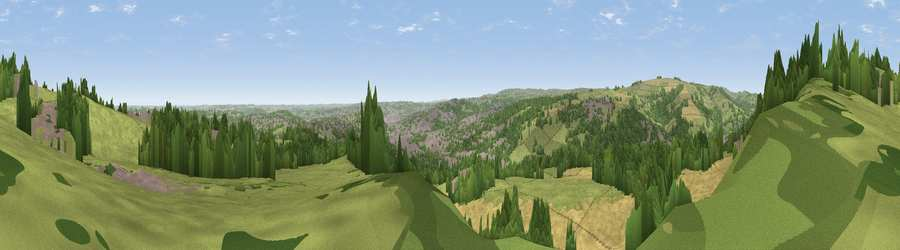

Viewpoint near Oughtibridge
#8855 in England · top 7% of its area beats it · near OughtibridgeWhere it is
The exact computed spot (SK 32575 93275). Click the marker for map links.
The view, rendered

A 360° render of this exact spot computed from the terrain model, tree cover and land cover — summer colours, afternoon light, calibrated against photographs of famous viewpoints. Real trees, hedges and buildings will differ in detail.
The panorama
Grey silhouette: terrain skyline in each direction (720 bearings, Earth curvature and refraction included). Dashed green: skyline with trees (+15 m) and buildings (+8 m) as obstacles. Blue strip: how far the ground is visible on each bearing.
Where the view opens
Wedge length = distance to the farthest visible ground on that bearing (vegetation-aware). Rings at 10, 25 and 50 km.
What fills the view
34% grassland · 33% woodland · 22% cropland · 11% built-up
Angular shares of the visible panorama (visual magnitude), not map area. Landscape diversity 0.57 (0–1 Shannon).
Key numbers
More beautiful places nearby
The staircase of upgrades: each row has a higher view potential than everything closer. Driving times are estimates from straight-line distance, calibrated against real road routing — check an actual route before setting out.
| Place | Direction | Drive | Score |
|---|---|---|---|
| Viewpoint near Oughtibridge | NNW · 1 km | ~2 min | 70.0 |
| Viewpoint near Whitley | N · 3 km | ~6 min | 72.1 |
| Viewpoint near Wharncliffe Side | NNW · 3 km | ~8 min | 75.2 |
| Viewpoint near Greenfield | WNW · 34 km | ~52 min | 76.0 |
| Wild Bank | W · 34 km | ~52 min | 76.2 |
| Viewpoint near Carrbrook | WNW · 34 km | ~52 min | 77.1 |
| Viewpoint near Otley | NNW · 52 km | ~74 min | 77.5 |
| Viewpoint near Mow Cop | SW · 58 km | ~81 min | 78.9 |
53.43526, -1.51114 · source: screening · position refined by local search. Computed location — check access rights before visiting.